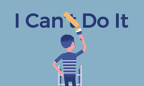

We all had dreams and aspirations as children. For me, I wanted to reach the skies. The thought of being up in the air, viewing the world from a different perspective, truly intrigued me. I was obsessed with the idea of becoming a pilot or an astronaut. However, as I grew up, I began to ask myself, 'Is this really it? Is this truly my dream?' Soon enough, the desire to be high above was buried deep within my mind.
It wasn't until high school that I engaged with various courses that piqued my interest. One of those subjects was, of course, Computer Science. This aspiration began in Grade 7, when we started building basic websites using HTML and CSS. I was fascinated by how such simple interfaces could be driven by complex code. My love for computer science only grew in the following years as more programming languages were introduced to us. We were taught C++, JavaScript, and Java, and I was amazed by their mechanics.
This adoration for computer science continued into college. When asked if I was pursuing my dream school or my dream course, I undoubtedly answered 'dream course.' To me, Computer Science is the future; everything is advancing and in need of innovation. With knowledge in this area, I know I can be of great help to people.
Apart from that, I know that joining the IT industry will support me and my family in the future. The potential earnings for computer science experts are significant. Although I know I am still far from that point, I believe that with perseverance and focus, I can reach it.

Beyond the practical benefits, I find a sense of satisfaction in the work itself. The process of debugging a complex error or watching a project come to life offers a unique thrill that I haven't found elsewhere. Every challenge I overcome serves as proof that I am capable of mastering this craft, turning what was once a mere interest into a genuine passion.
"It is not just about the destination or the paycheck, but the daily mental stimulation."
My goals, however, extend far beyond personal satisfaction or financial stability. I aspire to reach a level of mastery where I am not just a consumer of technology, but a creator of it. In a field that evolves rapidly, my aim is to remain a student, constantly adapting and growing. I want to possess the agility to navigate new frameworks and the wisdom to apply them effectively.
Ultimately, my biggest aspiration is to use this expertise to leave an indelible mark on the world. I dream of developing software that solves real-world problems. Systems that can streamline healthcare, improve education, or connect communities in meaningful ways. I want to look back years from now and see that my code did not just run on a machine, but that it improved lives. This desire to contribute to the greater good is the fuel that drives my ambition.
The doubts that once clouded my mind have now completely vanished. I look at the infinite possibilities on the screen before me and a sudden clarity washes over me: This is it. This is IT.
I no longer look up at the sky wondering if I belong among the clouds; I have found my universe right here.
This journey is no longer just an attempt at a career, but a calling. I am not just studying the future—I am preparing to build it.